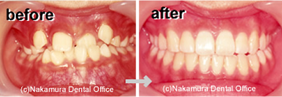
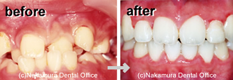

中村歯科医院の矯正歯科についてのご案内です。
歯並びや噛み合わせを整えることで、見た目だけでなく咀嚼・発音など機能面の改善も行います。
お子さまの咬合誘導（予防矯正）から大人の本格矯正まで幅広く対応。ブラケット矯正や床矯正、リンガルアーチ（裏側矯正）など、症状に合わせた方法を提案します。月1回の通院で調整可能です。


※多少の後戻りや歯ぐきの変化、むし歯リスクが生じる可能性があります。
※すべて同一患者の写真を使用しており、掲載にはご本人の同意をいただいております。
※効果には個人差があります。
※難症例は紹介させていただく場合がございます。
RESERVATION & CONTACT
診療時間 9:30〜13:00 ／ 15:00〜19:00 ※土曜午後は15:00〜17:00・日曜・祝日休診